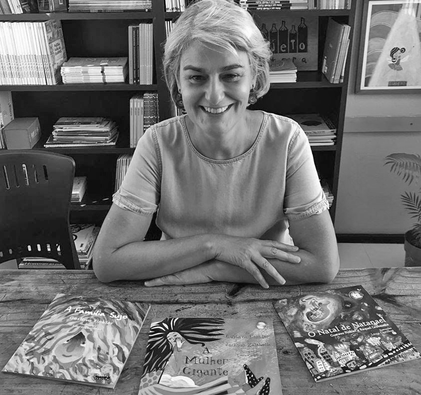

Esquisita como eu
Laura Castilhos
Ficha técnica
- Artista
- Laura Castilhos
- Título
- Esquisita como eu
- Ano
- 2004
- Técnica
- Pintura acrílica | Colagem
- Dimensões (com moldura)
- 30,5 cm x 55,5 cm
- Local de produção
- Porto Alegre, RS, Brasil

Laura Castilhos
Laura Castilhos nasceu em Porto Alegre, em 1959. É artista visual e ilustradora. Formou-se em Artes Visuais pela Universidade Federal do Rio Grande do Sul (UFRGS) e estudou gravura na Itália. Também fez doutorado na Espanha. Entre 2003 e 2023, foi professora do Instituto de Artes da UFRGS, onde ensinou desenho, aquarela e ilustração. Ela também pesquisa os livros ilustrados feitos no Brasil.
Seu trabalho é principalmente voltado para o desenho, a aquarela e a ilustração de livros, especialmente para crianças e jovens. Seu primeiro livro ilustrado foi Poesia fora da estante, publicado em 1995. Durante sua carreira, recebeu vários prêmios, entre eles o Prêmio Açorianos de Melhor Ilustrador, que ganhou em 1998, 1999 e 2001. Ilustrou mais de 40 livros, entre eles Esquisita como eu, A Mulher Gigante e Saco de Brinquedos. Saco de Brinquedos foi finalista do Prêmio Jabuti de ilustração.
Acessibilidade
Entenda alguns recursos de acessibilidade
Audiodescrição
Recurso que transforma elementos visuais em uma descrição falada. A descrição pode apresentar pessoas, objetos, formas, cores, movimentos, expressões e outros detalhes importantes para compreender uma imagem, obra ou ambiente. É especialmente importante para pessoas cegas ou com baixa visão.
Linguagem Simples
Forma de comunicar informações de maneira clara, direta e fácil de entender. Para isso, são usadas palavras conhecidas, frases mais curtas e uma organização que ajuda a encontrar e compreender as informações. Pode facilitar o acesso ao conteúdo para pessoas com diferentes níveis de escolaridade, dificuldades de leitura ou compreensão e diferentes formas de aprendizagem.
Comunicação Alternativa
Conjunto de recursos que ajuda pessoas que não conseguem se comunicar pela fala, ou que precisam de outras formas de comunicação. Pode envolver imagens, símbolos, gestos, objetos, textos ou dispositivos eletrônicos. Esses recursos permitem expressar ideias, necessidades, sentimentos e escolhas de diferentes maneiras.